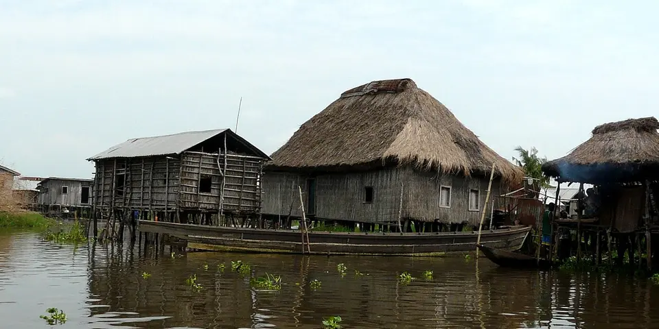

Sub-Saharan Africa
Benin on a budget
Benin is the birthplace of vodun, with the stilt village of Ganvié, the python temple at Ouidah and the royal palaces of Abomey, all an easy trip from Togo.
Photo: Manu25 at French Wikipedia, CC BY-SA 3.0, via Wikimedia Commons

Classic route
Cotonou, Ganvié, Ouidah and Abomey. 1 week, easy to pair with Togo.
Before you go
Flights to Ganvié: Skyscanner · Kiwi.com · Google Flights
Hostels and guesthouses in Ganvié · Ouidah · Abomey · Cotonou
Tours and tickets: Ganvié · Ouidah
Mobile data: Benin eSIM
Travel insurance: SafetyWing
How much 9 places in Benin cost
Daily budgets per person in US dollars: a hostel dorm or simple guesthouse, local food, local transport and the usual entry fees.
-
Ganvié
Glide by pirogue through a huge village on stilts in Lake Nokoué, past floating markets, homes and churches.
Bed $15 · Food $6 · Getting around $5 · Extras $6
Budget tip: Book the boat at the official jetty in Abomey-Calavi to avoid touts and get fixed prices.
$32per day -
Ouidah
Walk the Route des Esclaves to the Door of No Return, visit the python temple and join the vodun festival in January.
Bed $15 · Food $6 · Getting around $3 · Extras $4
Budget tip: The vodun festival is held every 10 January. Book a room early, and use zemidjans (moto taxis) to reach the beach.
$28per day -
Abomey
Explore the earthen royal palaces of the Kingdom of Dahomey, with bas-relief walls telling stories of kings and battles.
Bed $12 · Food $6 · Getting around $4 · Extras $4
Budget tip: Hire a guide at the palace museum, as there are few signs. Pair it with Ouidah on a cheap shared taxi loop.
$26per day -
Cotonou
A busy port city with the sprawling Dantokpa market, street food stalls and a long Atlantic beach.
Bed $18 · Food $7 · Getting around $3 · Extras $3
Budget tip: Zemidjans, the moto-taxis, are the cheap way around; agree the price before you get on.
$31per day -
Possotomé
A lakeside village on Lake Ahémé, with stilted fishing villages, natural hot springs and canoe trips at dawn.
Bed $12 · Food $6 · Getting around $4 · Extras $3
Budget tip: Stay at a village eco-lodge and hire a canoe with a local fisherman for a cheap trip on the lake.
$25per day -
Dassa-Zoumé
Town ringed by granite hills known as the 41 hills, with a Marian grotto that draws big August pilgrimages and easy rock scrambles.
Bed $12 · Food $6 · Getting around $4 · Extras $3
Budget tip: Climb the hills early morning for cool air and wide views, and use zemidjan moto-taxis to hop between sites for a few hundred CFA.
$25per day -
Grand-Popo
A quiet beach town of palms and fishing boats, with pirogue trips on the Mono River and its mangroves.
Bed $15 · Food $6 · Getting around $3 · Extras $3
Budget tip: Bush taxis from Cotonou take about 2 hours. The sea has strong currents, so swim carefully.
$27per day -
Porto-Novo
The quiet official capital, with Afro-Brazilian houses, a former church turned mosque and an excellent ethnographic museum.
Bed $15 · Food $6 · Getting around $3 · Extras $3
Budget tip: An easy day trip from Cotonou by shared taxi. Most museums charge only a small entry fee.
$27per day -
Bouche du Roy
Estuary where the Mono River meets the Atlantic near Grand-Popo, with mangrove pirogue trips, fishing villages and turtle nesting beaches.
Bed $15 · Food $6 · Getting around $5 · Extras $8
Budget tip: Arrange the pirogue trip through your Grand-Popo guesthouse and share the boat with others to split the cost.
$34per day
Know before you go
Benin on a budget: the basics
Currency
$1 = 583 XOF
West African CFA franc
| Dollars to XOF | XOF to dollars | ||
|---|---|---|---|
| $1 | 583 XOF | 100 XOF | $0.172 |
| $5 | 2,915 XOF | 500 XOF | $0.858 |
| $10 | 5,830 XOF | 1,000 XOF | $1.72 |
| $20 | 11,661 XOF | 5,000 XOF | $8.58 |
| $50 | 29,152 XOF | 10,000 XOF | $17.15 |
| $100 | 58,303 XOF | 50,000 XOF | $85.76 |
A typical day here (about $31) is roughly 18,000 XOF.
Mid-market rate on 2026-10-05. Cash machines and exchange desks pay a little less.
Getting around
Zemidjans (moto-taxis in yellow shirts) are the everyday way around town, and the Gozem app lets you book motos and cars in Cotonou. Shared taxis and buses run between Cotonou, Ouidah and Abomey, and Ganvié is reached by pirogue from the Abomey-Calavi jetty. Crossing to Lomé in Togo by shared taxi or bus takes a few hours.
Where to sleep
Cheap options are auberges, small guesthouses and church-run accommodation, with a few hostels in Cotonou. Ouidah and Abomey have simple family-run places that are easy to find on arrival.
What to eat
- Amiwo: red maize dough cooked in tomato and spices
- Wagasi: soft fried Fulani cheese, often in sauce
- Akassa: fermented maize paste served with fish or sauce
- Sodabi: strong local spirit distilled from palm wine
Money
Carry cash in small notes, since cards work mainly in bigger hotels and ATMs are in towns. Agree prices with moto drivers and at markets first; tipping is optional but welcome.
Phone data
SIMs from MTN or Moov are cheap and require a passport, and 4G works well around Cotonou and the main towns.
Heads up
Vodun is a living religion here, so ask before photographing shrines, ceremonies or people.
Benin travel: quick answers
How much does a day in Benin cost on a budget?
About $31 a day for one person, from $25 in Possotomé to $34 in Bouche du Roy. That covers a hostel dorm or simple guesthouse, local food, local transport and the usual entry fees, so a week runs about $217 before flights.
When is the best time to visit Benin?
November to February is the best time, with the most reliable weather for getting around.
What is the cheapest place to visit in Benin?
Possotomé, at about $25 a day. A lakeside village on Lake Ahémé, with stilted fishing villages, natural hot springs and canoe trips at dawn.
How long do you need in Benin?
Cotonou, Ganvié, Ouidah and Abomey. 1 week, easy to pair with Togo.
How much is $1 in Benin?
One US dollar is about 583 West African CFA franc (XOF), going by the mid-market rate on 2026-10-05. So $20 is roughly 11,661 XOF, and a typical budget day of $31 comes to about 18,000 XOF.
How do you get around Benin cheaply?
Zemidjans (moto-taxis in yellow shirts) are the everyday way around town, and the Gozem app lets you book motos and cars in Cotonou. Shared taxis and buses run between Cotonou, Ouidah and Abomey, and Ganvié is reached by pirogue from the Abomey-Calavi jetty. Crossing to Lomé in Togo by shared taxi or bus takes a few hours.
What food should you try in Benin?
Amiwo, red maize dough cooked in tomato and spices. Wagasi, soft fried Fulani cheese, often in sauce. Akassa, fermented maize paste served with fish or sauce. Sodabi, strong local spirit distilled from palm wine.
Planning around the seasons? See where to go in November, or compare the cheapest countries nearby.
Similar budgets nearby
- Ghana $30/day
- The Gambia $33/day
- Madagascar $35/day
- Togo $27/day